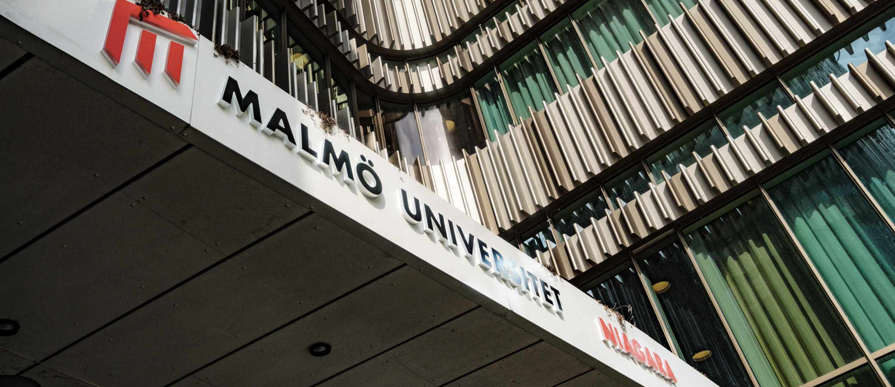
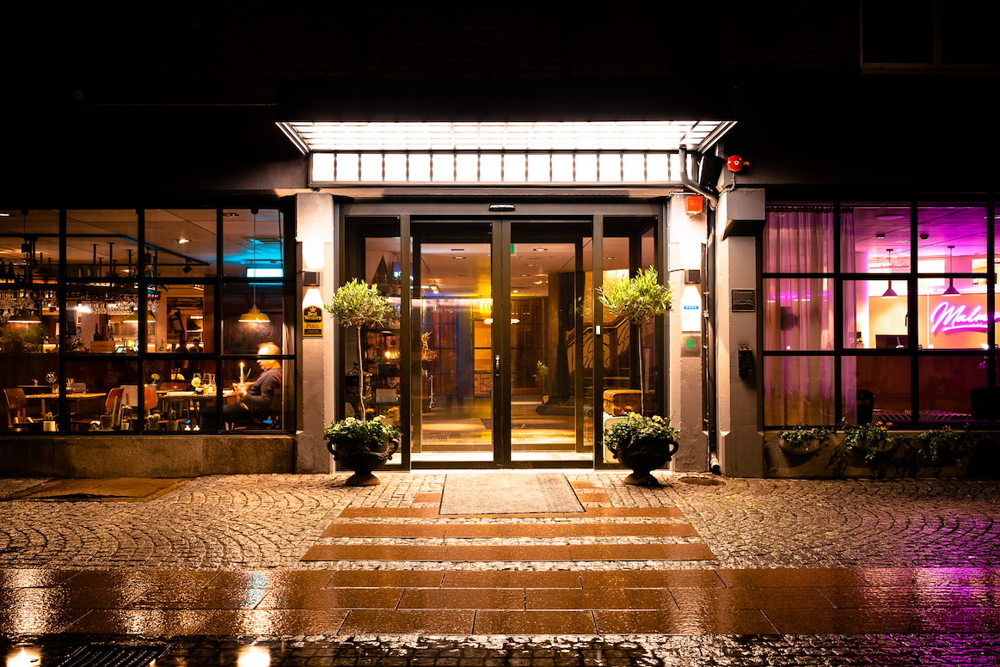
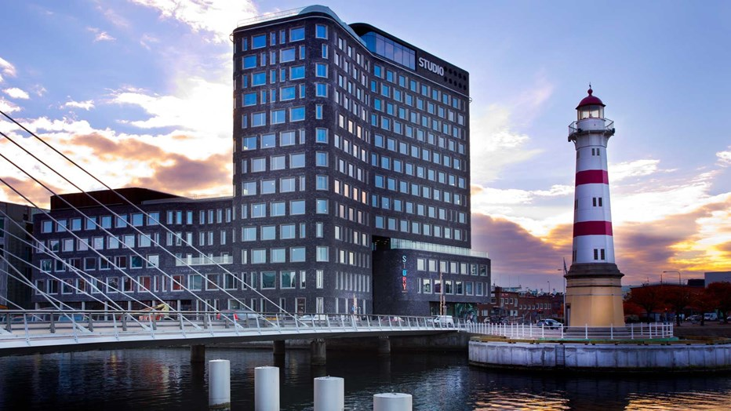
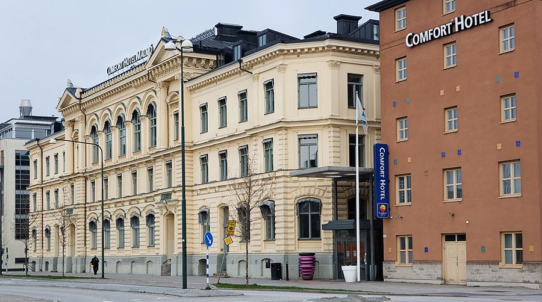

EASSS 2026
The 26th European Agent Systems Summer School
September 21-23, 2026 | Malmö, Sweden
EASSS 2026
The 26th European Agent Systems Summer School
September 21-23, 2026 | Malmö, Sweden


The 26th European Agent Systems Summer School (EASSS 2026) will take place at Malmö University, Sweden, on 21–22 September 2026, under the auspices of EURAMAS, the European Association for Multi-Agent Systems. EASSS 2026 is hosted by the Department of Computer Science and Media Technology (DVMT) and the Sustainable Digitalisation Research Centre (SDRC) at Malmö University.
Since it began in 1999, EASSS has grown into one of the key meeting points in Europe for people working on autonomous agents and multi-agent systems, bringing together experienced researchers and early-career scientists in a focused, collaborative setting. The program is designed for advanced Master’s students, PhD candidates, and early-career researchers, offering tutorials led by experts that balance core foundations with the latest developments shaping the field.
Topics span both theory and real-world applications of distributed intelligent systems, from the Internet of Things and autonomous robotics to smart environments and large-scale AI systems, reflecting where the field is heading and where it is already making impact.
Tutorial Proposals:
25 May 2026 (AoE, UTC-12)
Early Bird Registration:
until 24 July 2026
Summer School:
21-23 September 2026
The Organizing Committee of the 26th European Agent Systems Summer School (EASSS 2026) invites tutorial proposals for the event to be held at Malmö University, Sweden, on 21–22 September 2026. We are looking for engaging, well-structured tutorials that introduce key ideas in Autonomous Agents and Multi-Agent Systems while also highlighting emerging directions shaping the field today. Topics aligned with communities such as AAMAS and the JAAMAS journal are especially relevant.
Tutorials should provide a clear and balanced perspective on a topic, combining conceptual understanding with practical insight and real-world relevance. Each tutorial will run for approximately 3 hours (typically split into two 90-minute sessions) and is usually delivered by one or two instructors. We welcome contributions from both experienced researchers and early-career academics, aiming to create an interactive and high-quality learning experience for participants.
A contribution towards travel and accommodation may be provided for accepted tutorials.
Tutorial proposals must be submitted as a single PDF document (maximum 2 pages) using the official LaTeX template. Proposals should clearly communicate both the academic value and the learning experience of the tutorial. The expected structure follows established EASSS guidelines.
Tutorials should be designed to engage a diverse audience, from advanced students to researchers entering a new area.
We welcome proposals across the full spectrum of Autonomous Agents and Multi-Agent Systems, including (but not limited to):
We particularly encourage tutorials that connect established MAS principles with emerging paradigms, emphasize real-world impact, and include interactive or hands-on components.
A limited number of accepted tutorials may receive partial travel and accommodation support (up to €500), subject to budget availability. There is no registration fee for attending the summer school.
Proposals should be submitted via OpenReview (submission link to be announced).
For any questions, please contact: easss2026@mau.se
Registration for EASSS 2026 is now open. Registration is handled externally by Invajo, our conference registration and payment provider.
| Attendance | Student Fee (including PhD students) |
Non-Student Fee (researchers and industry) |
||
|---|---|---|---|---|
| Early Bird (until July 24) |
Late (from July 25) |
Early Bird (until July 24) |
Late (from July 25) |
|
| EASSS (Summer School) | 250€ | 300€ | 280€ | 340€ |
| EUMAS (Main Conference) | 300€ | 360€ | 350€ | 420€ |
| Both EASSS and EUMAS | 500€ | 600€ | 600€ | 720€ |
The registration fees are displayed in EUR for convenience only. Payments will be charged in SEK (Swedish krona) and may vary at the time of payment. A discount applies if you register for both EASSS and EUMAS (see table above).
If you require an official invitation letter to support a visa application, please contact the Organizing Committee at eumas2026@mau.se.
Please contact us well in advance of the conference to allow sufficient time for visa processing.
EASSS2026 will take place on Monday + Tuesday, Sep 21-22, 2026, as part of the pre-conference program of EUMAS2026, which will take place Wednesday - Friday, Sept 23-25, 2026.
The Summer School will consist of a three day program, consisting of different tutorials as well as an overlap with the EUMAS conference, which gives participants the possibility to attend keynote lectures.
| Time | Monday Sept 21 |
Tuesday Sept 22 |
Wednesday Sept 23 |
Thursday Sept 24 |
Friday Sept 25 |
|---|---|---|---|---|---|
| 09:00–10:30 | From Micro-Behaviors to Macro-Phenomena: An Introduction to Agent-Based Modeling | Multiagent Reinforcement Learning (MARL) for Traffic Control |
Opening Session
Keynote: Ann Nowé
Demo pitches
|
Keynote: Carles Sierra
Demo pitches
|
Paper Session 6 Main conference track |
| 10:30–11:00 | Coffee Break | Coffee Break | Coffee Break (with Demos) |
Coffee Break (with Demos) |
Coffee Break |
| 11:00–12:30 | From Micro-Behaviors to Macro-Phenomena: An Introduction to Agent-Based Modeling (continued) |
Multiagent Reinforcement Learning (MARL) for Traffic Control (continued) |
Paper Session 1 Research presentations |
Paper Session 4 Research presentations |
Paper Session 7 Research presentations |
| 13:00–14:00 | Lunch | Lunch | Lunch | Lunch | Lunch |
| 14:00–15:30 | Formal Methods for Safe Reinforcement Learning | Multiagentic AI: Engineering Safe and Flexible Systems | Paper Session 2 Research presentations |
Paper Session 5 Research presentations |
Paper Session 8 Research presentations Closing Session |
| 15:30–16:00 | Coffee Break | Coffee Break | Coffee Break (with Demos) |
Coffee Break (with Demos) |
Coffee Break |
| 16:00–17:30 | Formal Methods for Safe Reinforcement Learning (continued) |
Multiagentic AI: Engineering Safe and Flexible Systems (continued) |
Paper Session 3 Research presentations |
EURAMAS General Assembly Annual meeting |
|
| 17:30–19:00 | Welcome Reception | Conference Dinner | |||
This tutorial introduces agent-based modeling (ABM) as a practical and theoretical approach for studying how complex macro-level phenomena emerge from the local behavior and interactions of individual agents. Participants will learn the core ideas behind ABM, including agent heterogeneity, local interaction rules, adaptation, emergence, and the use of simulation for understanding social systems and supporting policy design. The tutorial also clarifies that, in ABM, an “agent” refers broadly to an autonomous entity in a model, not necessarily to an LLM-based or generative AI system.
The session combines short lectures with hands-on group work in NetLogo. Participants will explore classic models such as Wolf Sheep Predation and Schelling segregation, examine hidden states and policy interventions using the Virus model, and then frame or adapt an ABM for a problem of interest such as healthcare, traffic, misinformation, resource allocation, or housing. The tutorial is designed to be accessible to participants with different levels of programming experience.
Sz-Ting (Christine) Tzeng
Sz-Ting (Christine) Tzeng is a postdoctoral researcher in the Socially Aware AI research group at Umeå University. Her research focuses on multi-agent systems, explainable AI, and human-centered AI, with particular attention to value alignment, human-in-the-loop perspectives, human factors, and adaptive AI systems aligned with human norms and values.
Bertilla Fabris
Bertilla Fabris is a PhD student at Umeå University. Their research focuses on agent-based social simulation for critical healthcare processes, with an emphasis on using simulation models to understand complex social and organizational dynamics in healthcare settings.
This tutorial presents traffic control as a major application area for multi-agent systems and multiagent reinforcement learning. It begins with an introduction to traffic control, including traffic signal control, and gives a brief historical overview of classical and AI-based techniques. The tutorial then introduces key MARL concepts, including multiobjective MARL and the challenges caused by non-stationarity in traffic environments.
The main part of the tutorial explains how MARL can be applied to traffic control problems involving vehicles, pedestrians, public transportation, emissions, and competing objectives. Participants will see how MARL-based traffic control can be implemented step by step using the SUMO microscopic traffic simulator. The tutorial concludes by discussing the current state of the field and future directions for the MAS research agenda in transportation.
Ana Lúcia Cetertich Bazzan
Ana Lúcia Cetertich Bazzan’s PhD research focused on reinforcement learning and game-theoretic approaches to traffic signal control. From 1999 to 2024, she was a professor at UFRGS, where she led the MAS group, and she continues there as a visiting professor. Since June 2026, she has also been a visiting professor at the Department of Transportation at the University of São Paulo. She is a recognized expert on agents, MARL, and traffic control, and has served the AAMAS community, including as general co-chair of AAMAS 2014.
This tutorial presents the emerging connection between reinforcement learning and formal methods, focusing on how verification techniques can support the development of safe, reliable, and trustworthy AI systems. It introduces the basics of reinforcement learning and constrained reinforcement learning, then explains why some temporal objectives and safety requirements cannot be fully captured by standard constrained RL formulations.
Participants will be introduced to Linear Temporal Logic (LTL), automata-based specification, model checking, and synthesis, and will learn how these tools can be used to design RL algorithms with formal objectives, constraints, and safety guarantees. The tutorial covers state-of-the-art methods such as constrained MDPs and shielding, and uses examples from robot motion planning, water-tank control, and game-playing agents such as Pac-Man to illustrate the main ideas.
Francesco Belardinelli
Francesco Belardinelli is a Senior Lecturer in the Department of Computing at Imperial College London, where he leads the Formal Methods in AI lab. He has led multiple research projects and co-authored more than 100 conference and journal papers on the theoretical foundations and applications of formal methods for specifying and verifying complex AI systems. His recent work focuses on safe reinforcement learning.
Omar Adalat
Omar Adalat is a PhD student in the Department of Computing at Imperial College London. His research focuses on safe multi-agent learning with probabilistic and quantitative temporal logic constraints, as well as learning from formal specifications. He has served as a teaching assistant for modules including Formal Methods in AI, Deep Learning, Introduction to Symbolic AI, and Reinforcement Learning.
This tutorial studies Agentic AI through the lens of multi-agent systems. It examines how agentic approaches support interactions among autonomous agents and contrasts them with declarative approaches based on interaction protocols and norms. The tutorial focuses on how flexible and safe interactions can be engineered by combining agentic systems with formally specified interaction models.
Topics include the motivations and applications of Agentic AI, emerging industry-backed interaction protocols, declarative interaction protocols, LLM agents that enact protocols without protocol-specific programming, and norms-based decision making. By the end of the tutorial, participants will be able to critically assess Agentic AI approaches and understand how multi-agent system concepts, protocols, norms, and software tools can help address their limitations.
Amit K. Chopra
Amit K. Chopra is a Senior Lecturer at Lancaster University. His expertise lies in engineering abstractions for multi-agent systems, including protocols, norms, and platforms. His work has appeared in leading AI venues including AAMAS, IJCAI, and AAAI, was a finalist for best paper at AAMAS 2025, and has been supported by EPSRC and Marie Curie Fellowships.
Munindar P. Singh
Munindar P. Singh is the SAS Institute Distinguished Professor of Computer Science at North Carolina State University. His research has made major contributions to models of interaction, including formalizations of intentions, social commitments, social semantics for communication, and declarative communication models. He is a Fellow of AAAI, AAAS, ACM, and IEEE, and has received major awards from ACM SIGAI, IFAAMAS, and IEEE.
The EUMAS 2026 conference will be held at Malmö University, which is located in southern Sweden. Malmö is Sweden’s third biggest city and can be easily reached by train, bus, car, and plane.
The conference will take place in Malmö University’s Niagara building. Address for Niagara: Nordenskiöldsgatan 1, 211 19 Malmö.
The Conference site can be accessed by the following means of transportation:
Looking for a place to stay? Below you’ll find a curated selection of hotels located just a short distance from the conference venue.
Please note that accommodation is not included in the conference registration. Malmö University has arranged special discounted rates at several nearby hotels through block bookings for EUMAS 2026 participants. Rooms are limited and offered on a first-come, first-served basis, so we encourage you to secure your stay early.



